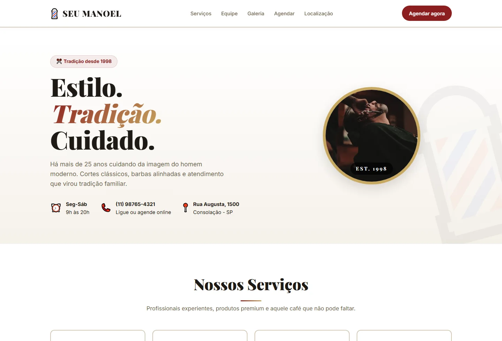

01 / DESTAQUESistema de agendamentoProjeto pessoal · demonstração local

Seu Manoel
Agendamento com regras
Escolher, validar e registrar um horário sem perder o contexto.
- Contexto
- Protótipo funcional de agendamento local para serviços, profissionais, datas e horários.
- Problema
- O cliente precisa encontrar um horário livre sem se perder entre etapas ou escolher um intervalo ocupado.
- Decisão
- Separar o fluxo em etapas validadas e isolar regras de disponibilidade em um módulo testável.
- Implementação
- Wizard em JavaScript, regras de conflito, persistência local, histórico, cancelamento e testes unitários.
- Prova técnica
- Reservas ativas bloqueiam slots, cancelamentos liberam horários e as regras têm cobertura com node:test.
- Limite
- Demonstração local. Não tem backend, autenticação, banco ou integração com agenda remota.
- 6 etapas de agendamento
- Regras em módulo separado
- LocalStorage para histórico
- Testes de disponibilidade